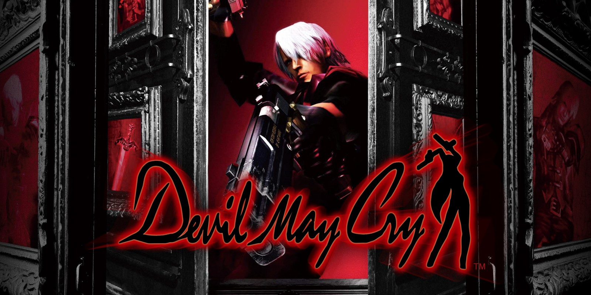
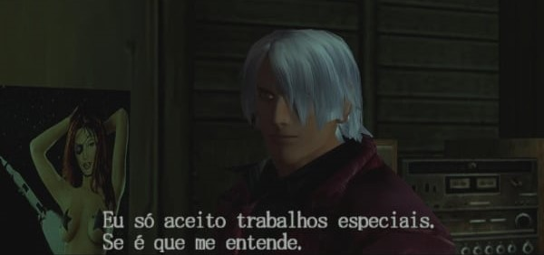

Devil May Cry 1

Devil May Cry 1 (デビル メイ クライ,Debiru Mei Kurai), é um videojogo de ação-aventura do género hack and slash desenvolvido e publicado pela Capcom em 2001 para PlayStation 2. Apesar do foco principal do jogo ser a luta com espadas, o jogador ganha novas armas à medida que vai derrotando os chefes, resultando numa variedade de combos que pode executar.
A história de Devil May Cry 1, é vagamente inspirada no poema A Divina Comédia com o uso de alusões, decorre nos tempos modernos na cidade fictícia de Mallet Island, e centra-se em Dante, um caçador de demônios que usa o seu negócio para obter vingança depois de perder a mãe e o irmão. Acaba por conhecer uma mulher de nome Trish que o leva numa aventura para derrotar o lorde demônio Mundus. A história é contada principalmente através de uma mistura de cutscenes, que usam o motor de jogo e vídeos em full motion pré-renderizados.
Originalmente concebido em 1999 como Resident Evil 4, Devil May Cry acabou por ser criado como um jogo independente com a sua própria história, isto porque a equipe de produção sentiu que o jogo não se iria adequar na série Resident Evil. Devil May Cry recebeu uma ampla cobertura mediática por parte dos mídia da especialidade devido ao impacto que causou nos jogos de ação, por causa da sua grande dificuldade e as pontuações elevadas que recebeu dos críticos profissionais, com muitos a concluírem que é um dos melhores e mais inovadores jogos que existiu.
Hoje em dia considerado um marco no gênero hack and slash, vendeu mais de três milhões de cópias e o seu sucesso fez com que a Capcom criasse outros jogos para a série, com uns a decorrerem antes e outros depois dos eventos de Devil May Cry 1.
Jogabilidade
A jogabilidade de Devil May Cry consiste em vários níveis chamados de "missões", onde os jogadores que controlam Dante, têm de lutar contra vários inimigos, fazer tarefas do tipo plataforma, e ocasionalmente, resolver puzzles ou enigmas para progredir na história. No fim de cada missão o jogador é recompensado com uma letra, conforme o seu desempenho: A, B, C, ou D, e adicionalmente a classe mais alta, S. As classes são dadas ao jogador com base no tempo gasto para completar a missão, nos itens usados, nos danos recebidos, no número de "Red Orbs" (a “moeda” do jogo obtida através dos inimigos derrotados) recolhidas e conforme foi o desempenho do jogador em combate no que toca ao "estilo".
O combate "com estilo" é definido quando o jogador faz uma série de ataques sem receber danos, com o desempenho do jogador a ser mostrado através de uma "barra de estilo" no ecrã. Quanto mais danos o jogador consegue fazer, mais completa fica a barra. A barra começa com "Dull", e vai progredindo através de "Cool", "Bravo" e "Awesome", com o ponto máximo em "Stylish". Os termos usados na barra são similares às classes atribuídas no fim das missões. Quando o personagem recebe danos, o nível de estilo desce de novo até "Dull". Os jogadores conseguem também manter a sua classe de estilo se apertarem o botão de "taunt" que seria o personagem zoando com os inimigos que estejam por perto. O jogador também pode equipar um grande número de armas e de pistolas, adaptadas a diferentes estilos de luta.
O jogador pode transformar temporariamente o personagem numa forma demoníaca, mais poderosa, ao usar a habilidade "Devil Trigger". Ao fazê-lo o personagem recebe poderes conforme a arma que está a usar no momento, assim como muda a sua aparência. A transformação aumenta a força e a defesa, restaura energia lentamente e disponibiliza ataques especiais. É controlado pela barra Devil Trigger, que se gasta quando a habilidade é usada. A barra enche-se quando o jogador ataca e zoa com os inimigos na forma normal.
Devil May Cry contém puzzles e outros desafios para além do combate. A história por vezes requer que se encontre itens chave para que o jogador possa avançar, de certa maneira similar aos enigmas dos jogos Resident Evil, assim como zonas opcionais de plataformas e tarefas de exploração para encontrar um número grande de "Orbs". As missões secundárias, com o nome "Missões Secretas", estão localizadas e escondidas em zonas fora dos locais de ação. Apesar de não serem obrigatórias, dão como recompensa power-up's permanentes. Normalmente as "Missões Secretas" desafiam o jogador a eliminar um certo número de inimigos de uma maneira especial ou dentro de um tempo limite. As recompensas para todos os enigmas e desafios opcionais vêem em diferentes tipos de "Orbs", que dão vários bónus, como vidas extra.
História
Devil May Cry 1 começa com Dante sendo atacado no seu escritório por uma mulher misteriosa, Trish. Ele impressiona-a ao desviar-se com facilidade do seu ataque, e ele diz a ela que ele caça demónios na busca daqueles que mataram a sua mãe e o seu irmão. Ela diz que o seu ataque foi apenas um teste, e que o demônio imperador Mundus, a quem Dante responsabiliza pela morte da sua família, está prestes a voltar. A cena salta depois para a chegada de ambos a um imenso castelo, sobre o qual Trish salta abruptamente e desaparece por cima de um muro alto.
Dante começa a explorar o castelo e encontra os vários inimigos comuns do jogo, como as marionetes demoníacas. Também encontra uma nova espada, a Alastor, e batalha contra o seu primeiro chefe, uma enorme aranha/escorpião, Phantom. Dante vence a batalha, mas naquilo que se torna num tema recorrente, o monstro derrotado reaparece pouco tempo depois num corredor, obrigando Dante a escolher uma fuga apressada ou ter que lutar num local apertado. Depois de mais alguma exploração e combates, Dante confronta um demônio, Nelo Angelo, que impressiona Dante com a sua confiança. O demônio vence, mas de repente foge ao perceber que Dante usa um amuleto partido ao meio, com a fotografia da sua mãe. O demônio volta a atacar por duas vezes, e, eventualmente, é revelado que ele é o irmão gêmeo de Dante, Vergil. Depois da morte de Angelo/Vergil, o seu amuleto une-se com o amuleto de Dante e a "Force Edge", a espada padrão do jogo, que tinha pertencido ao pai dos gêmeos, transforma-se na sua forma verdadeira, a "espada Sparda".

Em seguida, Dante encontra Trish, ela acaba traindo o Caçador de demônios e revela que ela está trabalhando para Mundus, mas quando a sua vida começa a correr perigo, Dante decide salvá-la, alegando que apenas fez isso só porque ela é muito parecida com a sua mãe, avisando-a para se manter afastada dele. No entanto, quando ele finalmente confronta Mundus, que está quase a matar Trish, Dante mais uma vez decide salvá-la mas fica lesionado no processo. Mundus tenta acabar com ele, mas Trish coloca-se em frente e recebe o ataque do demónio. Esta cena acaba por libertar todo o poder de Dante, permitindo assim que ele assuma a forma de Sparda. Dante e Mundus então batalham pelo plano da existência.
Dante acaba sendo vitorioso, e deixa o seu amuleto e sua espada junto ao corpo imóvel de Trish antes de partir. Mundus regressa e encurrala Dante, que agora está de novo na sua força normal, impedindo-o de fugir da ilha, Trish também volta a dá a Dante o seu poder. Dante derrota Mundus, que promete voltar e governar o mundo humano. Quando Trish tenta pedir desculpa começa a chorar, e Dante diz a ela que ela está se tornando mais humana e não apenas um demónio, porque "os demónios nunca choram". Dante e Trish escapam num avião ao mesmo tempo que a ilha colapsa. Após os créditos, é revelado que Dante e Trish estão trabalhando juntos como parceiros, e deram um novo nome à loja: "Devil Never Cry".